해설) 단답 암기형 / 난이도 下
| 점수 | 세부기준 |
|---|---|
| 4~0점 | 정답일 경우 4점, 오답일 경우 0점 |
수용률 = $ $
총 부하 설비용량에 대한 최대 수용전력의 비율이다.
수용설비가 동시에 사용되는 정도이다.
부등률 = \(\frac{각 부하군의 최대수요전력의 합}{합성 최대수요전력}\) ≥ 1
각 부하군의 최대수요전력의 합과 합성 최대수요전력과의 비이다.
최대 부하를 나타내는 각 부하의 시간대가 다른 정도를 의미한다.
부하율 = $ $
평균 수용전력: 정해진 기간 동안에 사용된 전력량의 평균이다.
최대 수용전력: 정해진 기간에서의 피크 부하일 때 최대로 사용하는 전력이다.
1에 가까울수록 전원설비를 효율적으로 사용함을 의미한다.
한전 전원 2개를 공급하여 비상시 예비회선으로 전환한다.
상용전원과 예비전원 사이에는 병렬운전을 하지 않는 것이 원칙이므로 수전용 차단기와 발전용 차단기 사이에는 전기적 또는 기계적 (①)을 시설해야 하며 (②)를 사용해야 한다.
정답①
②
부분점수
| 점수 | 세부기준 |
|---|---|
| 4~0점 | ①과 ②의 소문항 2개 중 정답 1개당 부분 점수 2점 획득 |
해설
인터록(Inter-lock)은 동시 투입을 방지하는 역할을 한다.
자동 전환 개폐기(ATS: Automatic Transfer Switch) → 수용가 부하측
OCR
OVR
UVR
GR
부분점수
| 점수 | 세부기준 |
|---|---|
| 4점~0점 | (1)~(4) 소문항 4개 중 정답 1개당 부분 점수 1점 획득 |
접근 POINT
계전기의 종류별로 명칭과 약어를 정리하여 암기해야 한다.
해설
①
②
③
④
| 점수 | 세부기준 |
|---|---|
| 4점~0점 | ①~④ 소문항 4개 중 정답 1개당 부분 점수 1점 획득 |
[ KS C IEC 60079-0 ] 방폭구조의 종류 및 기호
| 구분 | 기호 |
|---|---|
| 내압 방폭구조 | d |
| 안전증 방폭구조 | e |
| 본질안전 방폭구조 | i |
| 몰드 방폭구조 | m |
| 유입 방폭구조 | o |
| 압력 방폭구조 | p |
| 충전 방폭구조 | q |
| 특수 방폭구조 | s |
| 역할 | 명칭 |
|---|---|
| 단락 전류 제한 | ① |
| 페란티 현상 방지 | ② |
| 변압기 중성점 아크 소호 | ③ |
①
②
③
| 점수 | 세부기준 |
|---|---|
| 6점~0점 | ①~③ 소문항 3개 중 정답 1개당 부분 점수 2점 획득 |
| 명칭 | 역할 |
|---|---|
| 한류 리액터 | 단락 전류 제한 |
| 분로(병렬) 리액터 | 페란티 현상 방지 |
| 소호 리액터 | 변압기 중성점 아크 소호 |
| 직렬 리액터 | 전력용 콘덴서의 제5고조파 제한 |
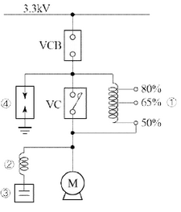
①
②
③
④
해설) 단답 암기형 / 난이도 下
리액터 기동법
도면의 명칭 작성
① 기동용 리액터
② 직렬 리액터
③ 전력용 콘덴서
④ 서지흡수기(SA)
부분점수
| 점수 | 세부기준 |
|---|---|
| 5~0점 | (1)과 (2)의 소문항 4개 총 5문항 중 정답 1개당 부분점수 1점 획득 |
접근 POINT
유도전동기의 기동법 중 리액터 기동법에 대한 도면을 보고 기동방법 및 부속품의 명칭을 물어보는 문제로 그림에 실마리가 있다.
해설
[형 유도전동기의 리액터 기동법]
전동기의 1차 측에 직렬로 철심이 든 리액터를 설치하고 그 리액턴스 값을 조정하여 전동기에 공급되는 전압을 제어함으로써 기동전류 및 토크를 제어하는 방식이다.
[도면 해석]
공급되는 전력이 3.3[kV]로 고압임을 알 수 있다. 그리고, 오른쪽 코일 그림에 50, 65, 80[%]의 비율이 적혀 있는 것으로 리액턴스 값을 조정한다는 것을 확인할 수 있다.
그림의 모터의 왼편에는 코일과 콘덴서가 붙어 있으며, 콘덴서는 병렬로, 코일은 콘덴서에 직렬로 연결된 모습으로 명칭을 확인할 수 있다. 여기서 주의할 점은 ④의 기호는 피뢰기(LA)와 서지흡수기(SA) 모두를 의미하는데 수변전설비가 아닌 고압 유도전동기의 기동반 단선도이기 때문에 서지흡수기가 된다. 만약에 수변전설비였다면 피뢰기가 맞다.
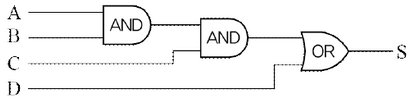
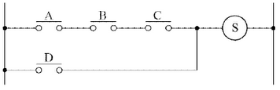
\[ 논리식 S = A \cdot B \cdot C + D \]
| 부분점수 | 점수 | 세부기준 |
|---|---|---|
| 3점 | 소문항 2개 모두 정답인 경우 3점 획득 | |
| 2점 | 소문항 (1)번 정답인 경우 부분 점수 2점 획득 | |
| 1점 | 소문항 (2)번 정답인 경우 부분 점수 1점 획득 |
A, B, C 직렬에 D의 병렬회로이다.
\[ X = A \cdot B \]
\[ Y = X \cdot C = A \cdot B \cdot C \]
\[ S = Y + D = A \cdot B \cdot C + D \]
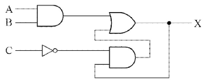
\[ 논리식 X = A \cdot B + C \cdot X \]
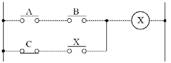
| 점수 | 세부기준 |
|---|---|
| 4점 | 소문항 2개 모두 정답인 경우 4점 획득 |
| 2점 | 소문항 (1)번 정답인 경우 부분 점수 2점 획득 |
| 2점 | 소문항 (2)번 정답인 경우 부분 점수 2점 획득 |
출력이 입력에 사용되어 논리식을 작성할 때 주의해야 하며, NOT 논리회로가 사용되어 유접점 회로를 작성할 때, a접점과 b접점을 구분하여 사용해야 한다.
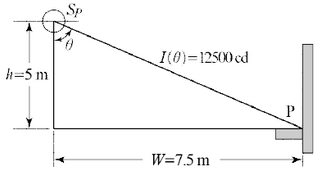
\[ E_h = \frac{I}{r^2} \cos\theta = \frac{12,500}{(\sqrt{5^2 + 7.5^2})^2} \times \frac{5}{\sqrt{5^2 + 7.5^2}} \approx 84.69 [lx] \]
정답 84.69 [lx]
\[ E_v = \frac{I}{r^2} \sin\theta = \frac{12,500}{(\sqrt{5^2 + 7.5^2})^2} \times \frac{7.5}{\sqrt{5^2 + 7.5^2}} \approx 127.80 [lx] \]
정답 127.80 [lx]
| 점수 | 세부기준 |
|---|---|
| 4점 | 소문항 2문제 계산과정과 정답이 모두 맞으면 4점 획득 |
| 2점 | 소문항 (1)번 계산과정과 정답이 모두 맞으면 부분 점수 2점 획득 |
| 2점 | 소문항 (2)번 계산과정과 정답이 모두 맞으면 부분 점수 2점 획득 |
\[ E_h = \frac{I}{r^2} \cos\theta = \frac{I}{(\frac{h}{\cos\theta})^2} \cos\theta = \frac{I}{h^2} \cos^3\theta = \frac{I}{r^3} h (여기서, \cos\theta = \frac{h}{r}, r = \frac{h}{\cos\theta}) \]
\[ E_v = \frac{I}{r^2} \sin\theta = \frac{I}{(\frac{w}{\sin\theta})^2} \sin\theta = \frac{I}{w^2} \sin^3\theta = \frac{I}{r^3} w (여기서, \sin\theta = \frac{w}{r}, r = \frac{w}{\sin\theta}) \]
발전기의 출력 = 400 kW × 40% = 160 kW
1kW = 860 kcal/h 이므로, 160 kW = 160 kW × 860 kcal/h = 137600 kcal/h
하루 동안 발생하는 열량 = 137600 kcal/h × 24 h = 3302400 kcal
\[ 소비되는 연료량 = \frac{3302400}{9600 \times 0.36} \approx 958.9 L \]
따라서 하루 동안 소비되는 연료량은 약 959 L이다.
정답 959 L
\[ B = \frac{860Pt}{H\eta} = \frac{860 \times 400 \times 24 \times 0.4}{9,600 \times 0.36} = 955.555 \approx 955.56 [L] \]
정답 955.56[L]
부분점수
| 점수 | 세부기준 |
|---|---|
| 5점~0점 | 계산과정과 정답이 모두 맞으면 5점 획득 오류가 있으면 0점 |
해설
\[ BH\eta = 860Pt, P = \frac{BH\eta}{860t}, B = \frac{860Pt}{H\eta} \]
\[ 부하율 = \frac{평균전력}{최대수요전력}, 평균전력 = 최대수요전력 × 부하율 \]
[배점: 10점]
\[ 선로 임피던스 Z = (0.3 + j0.4) \times 5 = 1.5 + j2 [\Omega] \]
역률 개선 전 전압강하 계산
\[ e = \frac{1,000 \times 10^3}{6,000} \times (1.5 + 2 \times \frac{0.6}{0.8}) = 500 [V] \]
역률 개선 후 전압강하 계산
\[ e = \frac{1,000 \times 10^3}{6,000} \times (1.5 + 2 \times \frac{\sqrt{1 - 0.95^2}}{0.95}) = 359.561 [V] \]
역률 개선 전후 전압강하의 비율은 \(\frac{359.561}{500} \times 100 = 71.912\) [%]
정답 71.91 [%]
전력손실은 \(P_1 = 3I^2R = 3 \left( \frac{P}{\sqrt{3}V \cos \theta} \right)^2 R = \frac{P^2R}{V^2 \cos^2 \theta}\) 로 \(\cos^2 \theta\)에 반비례한다.
역률 개선 전후 전력손실의 비율은 \(\left( \frac{1}{0.95} \right)^2 / \left( \frac{1}{0.8} \right)^2 \times 100\) = 70.914 [%]
정답 70.91 [%]
부분점수
| 점수 | 세부기준 |
|---|---|
| 10점 | (1), (2)번이 모두 정답인 경우 10점 획득 |
| 5점 | 문항 (1)의 계산과정과 답이 모두 맞은 경우 5점, 오류가 있으면 0점 |
| 5점 | 문항 (2)의 계산과정과 답이 모두 맞은 경우 5점, 오류가 있으면 0점 |
해설
[병렬 콘덴서(역률 개선용 콘덴서) 설치 효과]
전력 손실의 감소: 선로전류 감소로 전력손실\((I^2R)\)이 저감
\(P_1 = 3I^2R = \frac{P^2R}{V^2 \cos^2 \theta}, P_1 \propto \frac{1}{\cos^2 \theta}\) (전력손실은 \(\cos^2 \theta\)에 반비례)
전력 손실비: $ = = ( )^2 $
전력손실 감소율: $1 - ( )^2 $
[전압강하의 감소]
전압 강하 \(\Delta V = \frac{P_r}{V_r}(R + X \tan \theta)\) 에서
\[ \Delta V_1 - \Delta V_2 = \frac{P_r}{V_r}(R + P_r \tan \theta_1 \cdot X) - \frac{P_r}{V_r}(R + P_r \tan \theta_2 \cdot X) \]
\[ = \frac{P_rX}{V_r} (\tan \theta_1 - \tan \theta_2) \]
$ [_1 - _2]$ > 0이므로, \(\Delta V_1 > \Delta V_2\)가 된다.
[설비 용량의 여유 증가]
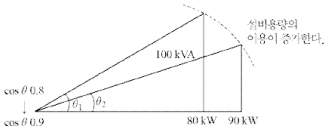
동일한 100[kVA]의 변압기에 대하여 부하 역률이 0.8에서 0.9로 증가하면, 변압기가 공급할 수 있는 유효전력은 80[kW]에서 90[kW]로 증가되어 설비의 여유도가 증가된다.
[전기요금 경감]
역률 90~95[%]까지일 경우 기본요금 0.5[%] 할인된다.
해설) 복합 계산형 / 난이도 중
\[ 실지수 RI = \frac{XY}{H(X+Y)} = \frac{10 \times 16}{(3.85 - 0.85) \times (10 + 16)} \approx 2.05 \]
정답 2.05
\[ FUN = EAD (여기서, D = \frac{1}{M}) \]
\[ N = \frac{EAD}{FU} = \frac{300 \times (10 \times 16) \times \frac{1}{0.7}}{(3,150 \times 2) \times 0.61} \approx 17.84 \]
정답 18[등]
부분점수
| 점수 | 세부기준 |
|---|---|
| 7점 | (1), (2)번이 모두 정답인 경우 7점 획득 |
| 2점 | 문항 (1)의 계산과정과 답이 모두 맞은 경우 2점, 오류가 있으면 0점 |
| 5점 | 문항 (2)의 계산과정과 답이 모두 맞은 경우 5점, 오류가 있으면 0점 |
해설
H = 천장의 높이(광원의 높이) - 작업면의 높이
감광보상율 \(D = \frac{1}{보수율}\) 이고, 소요 등기구 수는 소수로 나올 수는 없으므로 올림하여 18[등]이 답이 된다.
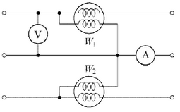
소비전력은 \(W = W_1 - W_2\) 로 계산할 수 있습니다.
\[ W = 5.6[kW] - 2.4[kW] = 3.2[kW] \]
정답 3.2 kW
피상전력 S는 다음과 같이 계산됩니다.
\[ S = VI = 220[V] \times 25[A] = 5500[VA] = 5.5[kVA] \]
역률 \(\cos \theta\)는 다음과 같이 계산됩니다.
\[ \cos \theta = \frac{W}{S} = \frac{3.2[kW]}{5.5[kVA]} \approx 0.5818 \]
퍼센트로 나타내면:
\[ \cos \theta \times 100\% \approx 58.18\% \]
정답 약 58.18%
해설) 복합 계산형 / 난이도 中
\[ P = W_1 + W_2 = 5.6 + 2.4 = 8 [kW] \]
정답 8[kW]
피상전력 \(P_a = \sqrt{3} VI = \sqrt{3} \times 220 \times 25\) [VA]
역률 \(\cos\theta = \frac{P}{P_a} = \frac{8 \times 10^3}{\sqrt{3} \times 220 \times 25} \times 100 \approx 83.98\) [%]
정답 83.98 [%]
부분점수
| 점수 | 세부기준 |
|---|---|
| 6점 | (1), (2)번이 계산과정과 답이 모두 맞은 경우 6점 획득 |
| 2점 | 문항 (1)의 계산과정과 답이 모두 맞은 경우 2점, 오류가 있으면 0점 |
| 4점 | 문항 (2)의 계산과정과 답이 모두 맞은 경우 4점, 오류가 있으면 0점 |
해설
2전력계법
\[ 유효전력 P = W_1 + W_2 \]
\[ 무효전력 Q = \sqrt{3} |W_1 - W_2| \]
\[ 피상전력 P_a = \begin{cases} \sqrt{3} VI & \text{(전압계, 전류계 ○)} \\ 2\sqrt{W_1^2 + W_2^2 - W_1W_2} & \text{(전압계, 전류계 ×)} \end{cases} \]
\[ 역률 \cos\theta = \frac{P}{P_a} \]
\[ \frac{R_a}{X_a} = \frac{R_b}{X_b} \]
\[ \frac{P_A}{P_B} = \frac{A \text{변압기의 용량}}{B \text{변압기의 용량}} \times \frac{\%Z_B}{\%Z_A} = \frac{20k}{75k} \times \frac{5}{4} = \frac{1}{3} , P_B = 3P_A \]
\[ P_A + P_B = P_A + 3P_A = 4P_A = 60[kVA] \]
\[ P_A = 60 \times \frac{1}{4} = 15[kVA], P_B = 60 \times \frac{3}{4} = 45[kVA] \]
정답 A 변압기: 15[kVA], B 변압기: 45[kVA]
[계산과정] $P_A + P_B = 4P_A $= 120 [kVA]
\[ P_A = 120 \times \frac{1}{4} = 30[kVA], P_B = 120 \times \frac{3}{4} = 90[kVA] \]
정답 A 변압기: 30[kVA], B 변압기: 90[kVA]
① A 변압기가 정격 운전일 때
\[ P_A = 20[kVA]일 때, P_B = 3 \times 20 = 60 [kVA] < 75 [kVA] \]
A 변압기가 정격일 때, B 변압기는 정격을 초과하지 않는다.
② B 변압기가 정격 운전일 때
\[ P_B = 75[kVA]일 때, P_A = \frac{75}{3} = 25 [kVA] > 20[kVA] \]
B 변압기가 정격일 때, A 변압기는 정격을 초과한다.
정답 A 변압기: 20[kVA], B 변압기: 60[kVA]
부분점수
| 점수 | 세부기준 |
|---|---|
| 6점 | 문항 (1), (2), (3)이 모두 맞은 경우 6점 획득 |
| 2점 | 문항 (1)의 계산과정과 답안이 모두 맞으면 2점, 오류가 있으면 0점 |
| 2점 | 문항 (2)의 계산과정과 답안이 모두 맞으면 2점, 오류가 있으면 0점 |
| 2점 | 문항 (3)의 계산과정과 답안이 모두 맞으면 2점, 오류가 있으면 0점 |
접근 POINT
변압기 병렬운전 시 각 변압기 분담 부하를 계산하는 문제이다. 변압기 병렬운전은 ① 병렬운전 조건, ② 부하분담 조건이 서술형 문제나 계산 문제로 자주 출제된다. 관련 개념으로 변압기 퍼센트 임피던스(%Z), 임피던스 전압, 임피던스 와트 등의 개념도 함께 공부해야 한다.
해설
변압기 병렬운전 시 부하분담 조건
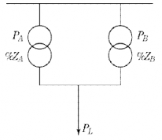
\[ \%Z_A = \frac{P_A Z_A}{10V^2} \to Z_A = \frac{10V^2 \times \%Z_A}{P_A} \]
\[ \%Z_B = \frac{P_B Z_B}{10V^2} \to Z_B = \frac{10V^2 \times \%Z_B}{P_B} \]
\[ A변압기 부하분담의 비 P\_{LA} = \frac{Z_B}{Z_A + Z_B} \]
\[ B변압기 부하분담의 비 P\_{LB} = \frac{Z_A}{Z_A + Z_B} \]
변압기 부하 분담식
\[ \frac{P*{LA}}{P*{LB}} = \frac{Z_B}{Z_A} = \frac{P_A \times \%Z_B}{P_B \times \%Z_A} \]
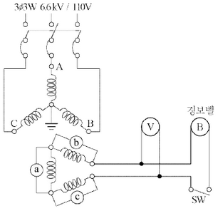
① B선의 대지 전압:
② C선의 대지 전압:
① ⓑ 전구의 전압:
② ⓒ 전구의 전압:
③ 전압계 ⑤의 지시전압:
④ 경보벨 ⑥에 걸리는 전압:
1선 지락시 지락되지 않은 상은 대지전위가 \(\sqrt{3}\)배 상승한다.
B선의 대지전압 : $ = 6600[V] $
C선의 대지전압 : $ = 6600[V] $
정답 ① B선의 대지전압: 6600 [V], ② C선의 대지전압: 6600 [V]
전구 ⑥의 전압 : $ = 110[V] $
전구 ⑦의 전압 : $ = 110[V] $
전압계 ⑤의 지시전압: $110 = 190.53[V] $
경보벨 ⑧의 지시전압: $110 = 190.53[V] $
정답① 전구 ⑥의 전압: 110[V]
② 전구 ⑦의 전압: 110[V]
③ 전압계 ⑤의 지시전압: 190.53 [V]
④ 경보벨 ⑧의 지시전압: 190.53 [V]
| 점수 | 세부기준 |
|---|---|
| 6점 | 문항 (1), (2)의 소문항 6개가 모두 맞은 경우 6점 획득 |
| 2점 | 문항 (1)의 소문항 2개 중 1문제당 1점 획득 |
| 4점 | 문항 (2)의 소문항 4개 중 1문제당 1점 획득 |
GPT : 접지형 계기용 변압기
| 측 | 전압[V] | 상 |
|---|---|---|
| 1차측 | \(6600/\sqrt{3} \rightarrow 0\) | A상 |
| $6600 $ | B, C상 | |
| 2차측 | \(110/\sqrt{3} \rightarrow 0\) | A상 |
| $110 $ | B, C상 | |
| 전압계, 경보벨 | $ 0 $ |
[조건]
[표 1. 전선의 허용전류]
| 단면적 (\(mm^2\)) | 허용전류 (A) | 전선관 3본 이하 수용시 (A) | 피복포함 단면적 (\(mm^2\)) |
|---|---|---|---|
| 5.5 | 34 | 31 | 28 |
| 14 | 61 | 55 | 66 |
| 22 | 80 | 72 | 88 |
| 38 | 113 | 102 | 121 |
| 50 | 133 | 119 | 161 |
[표 2. 부하 집계표]
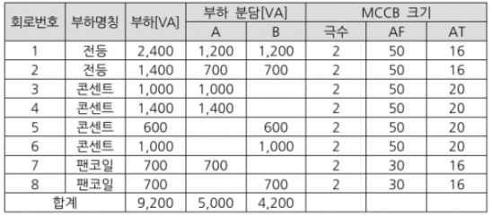
[표 3. 후강전선관 규격]
| G16 | G22 | G28 | G36 | G42 | G54 |
|---|
(1) 간선의 공칭단면적 (\(mm^2\))을 선정하시오.
정답\[ I_A = \frac{5,000}{110} = 45.454 [A], I_B = \frac{4,200}{110} = 38.181 [A] \]
\[ A = \frac{17.8 \times 100 \times 45.454}{1,000 \times 110 \times 0.02} = 36.776 [mm^2] \]
표에서 38[mm²] 선택
정답 38[mm²]
표1에서 전선 1선의 피복포함 단면적은 121[mm²]이다.
단상 3선식은 전선관에 3가닥이 들어가므로
\[ 3선의 총 단면적 = 121 × 3 = 363[mm²]이고, 이 값이 후강 전선관 내 전선의 점유율 48%이어야 한다. \]
\[ \pi (\frac{d}{2})^2 \times 0.48 = 363 에서 d = \sqrt{\frac{363 \times 4}{\pi \times 0.48}} = 31.03 [mm]로 \]
후강전선관의 규격은 구한 값보다 커야 하므로 G36 선정
정답 G36 선정
\[ 설비 불평형률 = \frac{3,100 - 2,300}{\frac{1}{2} \times (5,000 + 4,200)} \times 100 = 17.391 [%] \]
정답 17.39[%]
부분점수
| 점수 | 세부기준 |
|---|---|
| 7점 | (1)~(3)번이 모두 맞은 경우 6점 획득 |
| 3점 | 문항 (1)의 계산과정과 답이 맞으면 3점, 계산과정 또는 답에 오류가 있으면 0점 |
| 2점 | 문항 (2)의 계산과정과 답이 맞으면 2점, 계산과정 또는 답에 오류가 있으면 0점 |
| 2점 | 문항 (3)의 계산과정과 답이 맞으면 2점, 계산과정 또는 답에 오류가 있으면 0점 |
접근 POINT
전기 방식에 따른 전압강하 전선 단면적 공식을 적용하는 문제이다. 전압이 두 종류인 단상 3선식과 3상 4선식은 전선의 단면적 계산식에 반드시 상전압을 적용함에 유의한다.
해설
[저압 배선 전압강하 계산식]
\[ \Delta e = \frac{K \times I \times L}{1,000 \times A} [V] \]
K: 전압강하 계수(단상2선식: 35.6, 3상3선식:30.8, 단상3선식, 3상4선식:17.8)
L: 전선 1본의 길이[m], I: 부하전류[A], A: 전선의 단면적[mm²]
전압강하 계산식은 저압 배선에서 사용된다.
송수전 전압차 식$ E_s - E_r = I (R + X ) $(역률 1)에서
전압강하식$ E_s - E_r = I R $이 되며, 연동선의 저항 \(R = \rho \frac{l}{A}\) 에서
$ = = 0.01777… [/mm^2]$ 로 저항은 R $= $이 된다.
최종적으로 전기 방식별로 정리하면 아래와 같다.
| 전기 방식 | 전압강하[V] | 전선단면적 [mm²] |
|---|---|---|
| 단상 3선식 | \(e = \frac{17.8LI}{1,000A}\) | \(A = \frac{17.8LI}{1,000e}\) |
| 3상 4선식 | \(e = \frac{17.8LI}{1,000A}\) | \(A = \frac{17.8LI}{1,000e}\) |
| 단상 2선식 | \(e = \frac{35.6LI}{1,000A}\) | \(A = \frac{35.6LI}{1,000e}\) |
| 직류 2선식 | ||
| 3상 3선식 | \(e = \frac{30.8LI}{1,000A}\) | \(A = \frac{30.8LI}{1,000e}\) |
[유의사항] 3상 4선식 $A = $에서 e는 항상 상전압(220[V])을 적용.
[단상 3선식의 설비 불평형률]
설비 불평형률 = \(\frac{\text{부하설비 용량 [kVA]의 차}}{\text{총 부하설비 용량[kVA]} \times \frac{1}{2}} \times 100\) [%]
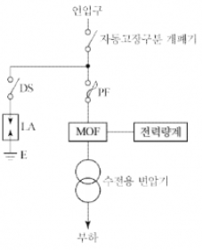
기중 부하 개폐기
피뢰기용 단로기
Disconnector 또는 Isolator
2회선
CNCV-W, TR-CNCV-W, FR-CNCO-W 중 2개
10[kA]
부분점수
| 점수 | 세부기준 |
|---|---|
| 6점 | 소문항 (1)~(6)이 모두 맞은 경우 6점 획득 |
| 1점 | 소문항 총 6문항 중 정답 1개당 1점 획득 |
해설
[용량별 사용 가능한 개폐설비]
[Disconnector(DISC)]
피뢰기 자체 고장 시 계통으로 파급되는 것을 방지하기 위해 내부 화약이 폭발하여 강제 분리한다.
[조건]
형광등은 40 [W] - 2,500 [lm] 을 사용한다.
조명률은 0.6, 감광보상률은 1.2로 한다.
기둥은 없는 것으로 한다.
간격은 등기구 센터를 기준으로 한다.
등기구는 ○으로 표현한다.
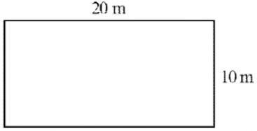
(3) 다음 그림과 같이 등간의 간격과 최외각에 설치된 등기구와 건물 벽 간의 간격 (A, B, C, D)은 몇 [m] 인지 계산하시오.
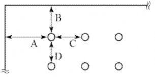
(4) 만일 주파수 60 [Hz] 에 사용하는 형광방전등을 50 [Hz] 에서 사용한다면 광속과 점등시간은 어떻게 되는지 쓰시오. (단, 증가, 감소, 빠름, 늦음 등으로 표현한다.)
정답해설: 순차적 문제 해결형 / 난이도 상
\[ N = \frac{20 \times 10 \times 200 \times 1.2}{2500 \times 0.6} = 32 \]
정답 32개
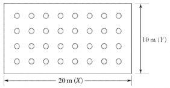
\[ C, D = \frac{20}{8} = 2.5 [m] \]
\[ A, B = \frac{10}{4} \times \frac{1}{2} = 1.25 [m] \]
정답 A: 1.25[m], B: 1.25[m], C: 2.5[m], D: 2.5[m]
정답 광속은 증가하고 점등시간은 늦어진다.
정답 1.5배
| 점수 | 세부기준 |
|---|---|
| 9점 | (1)~(5)번이 모두 맞은 경우 9점 획득 |
| 3점 | (2)번이 맞은 경우 3점 획득 |
| 3점 | (3)번이 계산과정과 함께 맞은 경우 3점 획득 |
| 3점 | (1), (4), (5)번이 맞은 경우 한 문제당 1점씩 획득 |
종합적인 조명 설계 문제이다. 등기구 수, 배치, 벽 간격, 주파수에 따른 영향 등 흐름을 이해하고 공식은 암기해야 한다.
[조명 공식]
FUN = EAD
F(광속, lm), U(조명률, %), N(등기구 수), E(조도, lx), A(면적), D(감광보상률)
등기구와 벽 간격은 등기구 간격의 \(\frac{1}{2}\) 로 한다.
[주파수 변화에 따른 광속, 점등시간 변화]
\[ 리액턴스 X_L = 2\pi f Lx \]
따라서 주파수가 감소하면 리액턴스가 감소하여 전류, 광속 증가하고, 주파수의 감소로 주기는 증가하게 되어 \((T \propto \frac{1}{f})\), 점등시간은 늦어진다.